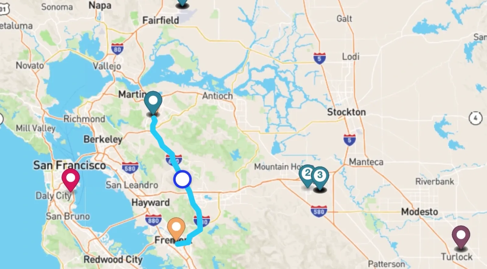
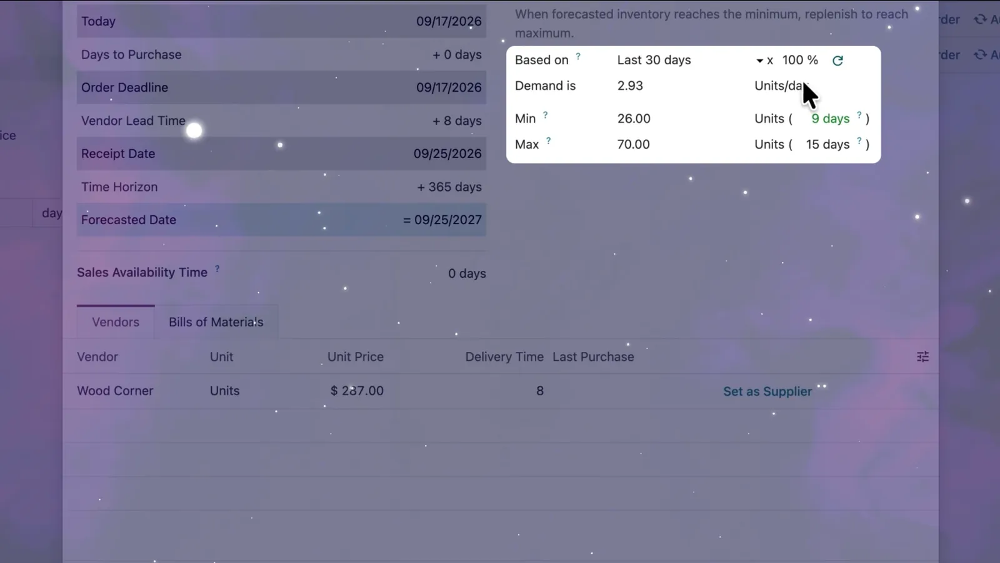
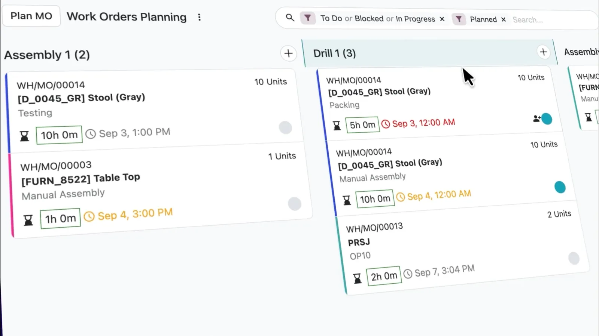
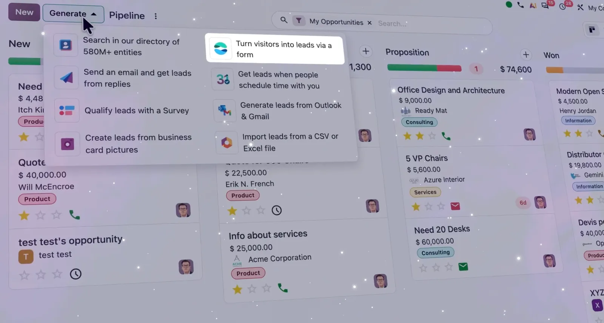

Odoo 20 upgrade checklist: what to test before you go live
How the upgrade works on Odoo Online, Odoo.sh and on-premise, what to test first, and how to plan go-live.
BIR noticeCAS and CBA users register their 2026 computerised books online through ORUS by 30 January 2027 (calendar-year taxpayers).Computerised books: register in ORUS by 30 Jan 2027.
CAS set-up in OdooOdoo 20's headline changes are AI agents inside automated actions, MCP support, an offline mode and Field Service moving into Planning. Odoo unveiled version 20 at Odoo Experience 2026 in Brussels. Here is what actually changes for the people who use it every day, and what to check before you upgrade.
By TechNext · · Updated · 6 min read Odoo news
Odoo news
Key takeaways
Odoo ships one major version a year, and it presents each one at Odoo Experience, its annual conference in Brussels. Odoo 20 arrived there in September 2026, with long release notes covering almost every app. At TechNext we implement and support Odoo for companies in Singapore, the Philippines, Vietnam and beyond, so we read the notes with one question in mind: what changes for the people who use Odoo every day?
Odoo's own summary of the release is short: a refreshed look, processes that run themselves through AI agents, websites built from a single sentence, and an AI accounting assistant. Below is what each of those means in practice, plus the smaller changes that matter just as much when you plan an upgrade.
Should you upgrade to Odoo 20 now?
Where does Odoo run?
What do you use today?
Odoo 20 adds AI agents that automated actions can call, an MCP connector for outside AI tools, offline mode, bill payments from Odoo and an Accounting Assistant. Field Service moves into Planning, payroll work entries are removed and account groups become parent accounts. Before upgrading: check removed or moved features, custom modules and Studio changes, AI usage and credits, and do a dry run on a copy.
The biggest shift in Odoo 20 is that AI stops being a chat box on the side. Automated and scheduled actions can now call an AI agent, so you can describe a process in plain language and let the agent carry it out. Agents in Odoo 20 can:
Conversations are stored for up to 30 days, Odoo picks the AI model automatically, and what used to be called "topics" are now "skills". One practical point: Odoo's release notes say every AI feature now uses paid IAP credits. Budget for usage, not just for the subscription.
Odoo 20 adds a connector for the Model Context Protocol (MCP), the open standard AI assistants use to reach business systems. Odoo describes it as a way to link any AI system to your database, and the external tool works within the user's existing access rights. For companies already using AI assistants elsewhere, this is the difference between copying data out of Odoo and asking questions of the live system.
You can now create, edit, archive and delete records, and rerun earlier searches, without a connection. Changes sync when you are back online. Odoo pitches this at on-site teams: warehouse floors, construction sites and field technicians. The mobile interface also gets a swipe-down command palette, a bottom-sheet date picker, better forms on touchscreens and file sharing from the phone.
The standalone Field Service app is discontinued. Its features (a live map, routing preferences, travel fees, a website request form and worksheets) now live in the Planning app. If your technicians use Field Service today, this is the first thing to test on a copy of your database before upgrading.

| App | What changes in Odoo 20 |
|---|---|
| Payroll | A dashboard rebuilt around warnings, test print of pay runs, net-to-gross simulation and working schedules in hours per day. Work entries, and the Planning-to-Payroll link, are removed. |
| Inventory & Purchase | Suggested stock levels for reordering rules (based on the last 30 days of sales), inventory at a past date, a stock aging report and a vendor quality rate. |
| Manufacturing | Continuous production, bill of materials comparison, split manufacturing orders and new work order views. |
| Spreadsheet | Bubble and calendar charts, named ranges, locked sheets, regex formulas and calculated columns. |
| Point of Sale | Snooze products, turn order lines into a combo, and take multiple currencies. |
| CRM | Lead generation now uses Dun & Bradstreet data instead of Clearbit. |
| Website | An AI Website Assistant that builds and edits pages by chat, structured data on by default, llms.txt and AI-assisted SEO. |



Screenshots and videos: Odoo S.A., from the Odoo 20 launch on odoo.com and Odoo's YouTube channel.
At Odoo Experience, Odoo said its prices had not changed since 2022 despite 26% cumulative inflation. The One App Free plan stays, the Standard plan is unchanged and the Custom plan rises by 20%. There is also a new Light User access type for employees who only need things like HR self-service. Prices differ by country and currency, so check odoo.com/pricing for your market, or ask TechNext to include the licence estimate in your quotation.
How you move depends on where Odoo runs. Odoo Online databases go through Odoo's own upgrade service. Odoo.sh and on-premise databases, especially those with custom modules, need a planned upgrade. Either way, we recommend four checks first:
This is how TechNext runs upgrades for clients on our support plans: on a staging copy first, checked against real records, with go-live only once the finance team has closed a test month.
The headline items are AI agents that automated actions can call, an MCP connector for outside AI tools, offline mode, bill payments and an Accounting Assistant. Field Service moves into Planning, payroll work entries are removed and account groups become parent accounts. Odoo publishes the full notes at odoo.com/odoo-20-release-notes.
Odoo Online databases use Odoo's own upgrade service. Odoo.sh and on-premise databases, especially with custom modules, need a planned upgrade: check removed or moved features, test custom modules and Studio changes, budget AI credits, and do a dry run on a copy of the database before the live upgrade.
Odoo unveiled Odoo 20 at Odoo Experience 2026 at Brussels Expo, and published the release notes in September 2026.
Yes. Odoo's release notes say every AI feature now uses paid IAP credits, which are billed on top of the Odoo subscription.
The standalone Field Service app is discontinued. Its features, including the live map, routing, travel fees and worksheets, now sit in the Planning app.
Yes. TechNext upgrades a copy of your database first, tests custom modules and a month-end close, and only then schedules the live upgrade.
About TechNext. TechNext Pte. Ltd. is an affordable Odoo partner for SMEs: an Odoo Ready Partner headquartered in Singapore, with its main development and consulting hub in Taguig City, Metro Manila. We plug Odoo into the system you already run, and our own experts implement it end to end (discovery, configuration, data migration, training and support), set up with the Philippine (BIR) and Singapore (GST) localisations, for clients in 25+ countries. We are not affiliated with, accredited by or acting for the BIR or any government agency, and we do not file or register on your behalf. About us · Talk to an Odoo expert
How the upgrade works on Odoo Online, Odoo.sh and on-premise, what to test first, and how to plan go-live.
GST and IRAS reports for Singapore, BIR 2306/2307 and payroll forms for the Philippines, Circular 99 and SInvoice for Vietnam.
Odoo's growth, AI agents and the MCP connector, the first price change since 2022, and a new Philippine subsidiary.
TechNext sets up your Odoo, can build your website and brand on it, and stays on after go-live, in Singapore and the Philippines. An adviser reviews your situation first.